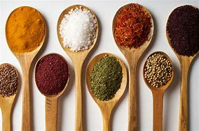

Sal gruesa

Usos de la Sal Gruesa en la Cocina
- Sazonar carnes y pescados: Realza el sabor y ayuda a formar una costra crujiente.
- Cocción en costra de sal: Se cubren alimentos con sal gruesa para lograr una cocción jugosa.
- Preparación de salmuera: Se disuelve en agua para mejorar la textura y jugosidad de carnes y vegetales.
- Potenciar el sabor en la parrilla: Se usa en brasas o directamente sobre los alimentos.
- Cocción de pastas y vegetales: Se agrega al agua para resaltar sabores.
- Conservación de alimentos: Se usa en el curado de carnes y pescados.
Cantidades y su valor